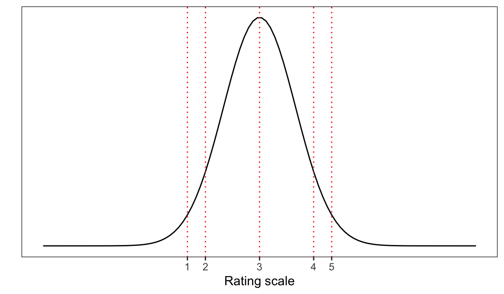

Week 20. Conceptual introduction to Ordinal (Mixed-effects) Models
Written by Rob Davies
Introduction to Ordinal Models
Motivations: working with ordinal outcomes
Ordinal data are very common in psychological science.
Often, we will encounter ordinal data recorded as responses to Likert-style items in which the participant is asked to indicate a response on an ordered scale ranging between two end points (Bürkner & Vuorre, 2019; Liddell & Kruschke, 2018). An example of a Likert item is: How well do you think you have understood this text? (Please check one response) where the participant must respond by producing a rating, by checking one option, given nine different response options ranging from 1 (not well at all) to 5 (very well).
The critical characteristics of ordinal data values (like the responses recorded to ratings scale, Likert-style, items) are that:
- The responses are discrete or categorical — you must pick one (e.g.,
1), you cannot pick more than one at the same time (e.g.,1and2), and you cannot have part or fractional values (e.g., you can’t choose the rating1.5). - The responses are ordered — ranging from some minimum value up to some maximum value (e.g.,
1\(\rightarrow\)2\(\rightarrow\)3\(\rightarrow\)4\(\rightarrow\)5).
In these materials, we are going to keep things simple by focusing on data comprising responses recorded to ratings scale Likert items. As we discuss, following, we often suppose that the response a participant produces to a rating question corresponds to a value on an underlying dimension that indirectly informs the participant response production process. But we should be aware that ordinal data can come from a variety of possible psychological mechanisms Ordinal data can also reflect processes in which participants have worked their way through a progression or sequence of decisions (see, e.g., Ricketts et al., 2021).
Note
Ordinal models: why do we need to do this?
- We are aiming to develop skills and understanding of an approach to modeling that enables us to more accurately capture, in principle, the psychological processes that produce the data we analyse.
Challenges
At first, we face two main challenges when working with ordinal data. The challenges are conceptual and social, more than statistical or computational.
The first challenge is conceptual because ordinal data values look like numbers but we cannot treat them like the numbers we are used to when we measure things like reaction time (RT), heat energy (temperature) or distance (e.g., height).
- We typically encounter ordinal data (e.g., from Likert-style items, given rating scales) in contexts in which the response values that we observe look like numbers (e.g.,
1) just like the numbers we handle in other contexts (e.g., RT or temperature or height). But those other numbers have what is known as metric properties (Liddell & Kruschke, 2018): Metric measurement scales assume that the numbers we observe are on interval or ratio scales.
- Interval scales define the distances between points somehow.
- Ratio scales incorporate a zero point.
Whereas ordinal data (e.g., responses to a rating question) have neither of these properties.
This means that, for ordinal data:
- We cannot assume that the distances are equal between different values of the range of possible values, for example, for the rating scale:
1\(\rightarrow\)2\(\rightarrow\)3\(\rightarrow\)4\(\rightarrow\)5. This means that we do not know or cannot assume that the distance between, e.g.,1\(\rightarrow\)2is the same as the distance between, e.g.,3\(\rightarrow\)4. - We do assume that all observed responses will take one of the categorical values between the minimum and the maximum values on the scale (e.g., between
1and5on a 5-point rating scale ranging from 1-5).
The second challenge is social because, most of the time, Psychologists do in practice treat ordinal data like numeric data from measurement scales with metric properties. This is a mistake though it is very very common.
- Liddell & Kruschke (2018) analyzed a sample of papers from a set of top Psychology journals. They found that whenever an article mentioned Likert data (i.e., ratings data), the authors of that article analyzed the Likert-scale ordinal data as if they were metric, using analysis methods (like ANOVA, correlation, ordinary least squares regression (linear models), and t-tests) that assume metric properties.
This means that:
- Most Psychologists will assume that it is correct to analyse ordinal data using methods that assume metric properties.
- Most Psychologists will fail to look for, or to see, the problems associated with this conventional approach.
- The results from many reports in the literature will be difficult to evaluate or interpret, where the authors have analysed ordinal data using methods assuming metric properties in outcome measurement scales.
The challenge we face is that we will aim to develop skills in using ordinal models when, in contrast, most psychological research articles will report analyses of ordinal data using conventional methods like ANOVA or linear regression. We will work to understand why ordinal models are better. We will learn that applying conventional methods to ordinal data will, in principle, involve a poor account of the data and, in practice, will create the risk of producing misleading results. And we will learn how to work with and interpret the results from ordinal models with or without random effects.
In our work in this chapter, we will rely extensively on the ideas set out by Bürkner & Vuorre (2019) and Liddell & Kruschke (2018), see Section 1.16.
The key idea to get us started
Important
The point is that observed outcome response values, given ordinal data, look like numbers but it is best to understand ordinal data values as numeric labels for ordered categories.
- What the different categories correspond to — what dimension, or what data generating processing mechanism — depends on your psychological theory for the processes that drive response production for the task you constructed to collect or observe your data.
What we think we are doing with ordinal data: ratings
In the context of a study in which we have asked participants to produce a rating response to a Likert-style item, we may assume that the ratings responses are produced (in participants’ minds) by psychological processes in which the participant, in response to the Likert question, divides some latent (unobserved) psychological continuum or dimension into categories (or cut-points or thresholds) so that they can select a response option.
Imagine, for example, that you are a participant in a study on reading comprehension, and that you have been asked to read a text (giving information on some health condition) and have then been asked to respond to the question:
How well do you think you have understood this text? (Please check one response) (on the scale 1-5)
In theory, to answer this question, you will have to choose a response based on where you think you are on your unobserved (internal to you) measure of your understanding of the information in the text you have been asked to read. You may be able to evaluate the cohesion, or some other internal measure, of your understanding of the text. Simplifying a bit, we might assume that your internal measure of understanding is associated with a normal probability distribution so that it peaks over some value (e.g., 3) of the strength of understanding, though other values are possible.
As Figure 1 suggests, a participant in this situation will have to map where they are on the internal measure (the unobserved latent dimension of their understanding) to a number from the response options they are given (e.g., rating scale values ranging 1-5). They must cut or divide into categories (using unobserved threshold values) where they are on this unobserved internal dimension (this sense of their own understanding). And there is no reason to suppose that their internal measure of their understanding is divided into an ordered metric scale: we cannot assume that in a participant’s mind, e.g., the distance 1 \(\rightarrow\) 2 is the same as the distance between, e.g., 3 \(\rightarrow\) 4.
In conducting analyses of ordinal data with ordinal models, we often fit models that describe the cumulative probability that a rating response maps to some value (typically, understood in terms of thresholds) on an underlying latent continuum.
This is a very common situation, and that is why we focus in this chapter on the corresponding class of parametric ordinal models: cumulative models. Bürkner & Vuorre (2019) provide a nice account of cumulative models, and we walk through that account here but note, before we go on, that this account is spelled out in the context of an example data-set and an example model that supposes some simplifying assumptions: we are talking about one example from a class of possible models; other models, with alternate assumptions, are possible, and you can expand your understanding by reading the papers referenced in Section 1.16.
Let’s assume we have observed a set of responses to the question:
How well do you think you have understood this text? (Please check one response) (on the scale 1-5)
Our cumulative model assumes that the observed ordinal data — the column of values, the rating responses we recorded from participants — variable \(Y\) are produced (by the participants) given categorization of a latent (not observed) continuous variable \(\tilde{Y}\) into a set of different categories, using a set of threshold values.
In our analysis, we model the categorization process.
We assume that there are \(K\) thresholds \(\tau_k\) which cut \(\tilde{Y}\) into \(K+1\) observable ordered categories of \(Y\), where \(Y\) comprises the values of the response a participant can make (given the rating scale response options we give them).
For the latent variable we see in Figure 1, there are five (\(K+1 = 5\)) response categories so we need \(K = 4\) thresholds.
Because we can assume that \(\tilde{Y}\) values derive from a specific probability distribution (e.g., a normal distribution, though there are alternatives), we can suppose that the probability that \(Y\) (the observed rating) has some value (e.g., a rating of 5), that is, the probability that \(Y\) is equal to category \(k\) as:
\[ Pr(Y=k) = F(\tau_k) - F(\tau_k-1) \]
You can understand this probability we are targeting, in our analysis, as the probability that a rating response (made by a participant to our Likert-style item) is equal to \(k\) (e.g., a rating of 5) rather than some other value (e.g., on our 5-point example scale, a rating of 4 or 3 or 2 or 1), given the probability function \(F\).
- If you reflect: this resembles the target for analysis when we are working with accuracy outcome data, and we wish to estimate the effects of factors that may predict the probability that the response a participant makes is correct (not incorrect).
In our model, we can aim to predict \(\tilde{Y}\), given information about predictor variables. Let’s say, for our example, that we think that people who know more about health (so: score higher on measures of health literacy), are more likely to produce a high rating of their understanding of the information in a health text (maybe because they do understand the text better). If so, our model might look like this:
\[ \tilde{Y} = \beta_X + \varepsilon \]
where
- \(\tilde{Y}\) is our latent (not observed) continuous variable,
- \(\beta_X\) is the coefficient \(\beta\) corresponding the average rate of change in the outcome, given different values in the predictor \(X\),
- and \(\varepsilon\) is the random error of the model, the variance that cannot be explained by the model.
For short, we can identify \(\eta = \beta_X + \varepsilon\).
(Broadly the same model structure will apply, as we will see, for multilevel data or for nonlinear relationships.)
Given the probability function \(F\) we assumed, we model the probability of (observed) \(Y\) being equal to category \(k\) (some rating value versus other values), based on our prediction model \(\eta\).
\[ Pr(Y=k | \eta) = F(\tau_k - \eta) - F(\tau_k-1 - \eta) \]
What cumulative models do is to take the observed ratings values \(Y\) and, for the prediction model \(\beta_X + \varepsilon\), use that information to estimate the thresholds \(\tau_k\) (for our example, thresholds \(tau_1\) to \(\tau_4\)) and the coefficient \(\beta\).
In doing this, we assume for simplicity that the effect of the predictors in the model \(\eta = \beta_X + \varepsilon\) is constant across response categories though we can relax this assumption (if a predictor has different impacts on different categories).
What psychologists are doing with ordinal data: ratings
As I referenced earlier, we cannot just fit a linear model to ordinal data like ratings: we should not use methods like ANOVA, correlation, t-test, or regression.
- Why not?
The short answer (Bürkner & Vuorre, 2019) is that we should not use methods like ANOVA, correlation, t-test, or regression to analyze ordinal data because:
- these methods assume metric properties for outcome variables but ordinal data do not possess metric properties (equal intervals, zero points);
- the distribution of ordinal responses may be non-normal (if low or high ratings are often chosen);
- and variances of the unobserved latent variable or dimension (\(\tilde{Y}\)) that informs (we hope) observed ratings may be different for different groups or conditions.
The long answer Why not? is supplied by Liddell & Kruschke (2018) in a series of analyses of simulated and real data.
They argue that ordinal models supply a more accurate account of the data generating (psychological processes) that result in the ratings or the other ordinal data that we observe so, in principle, we should ordinal models anyway. We may differ in exactly what assumptions we want to make about things like the underlying probability distribution, or the impact of predictors on categories, but in general once we choose to employ ordinal models we are adopting a more realistic account of where our data come from.
Even if we were to ignore this in principle justification, however, we should be aware of the problems associated with employing metric methods (ANOVA etc.) with ordinal data. These problems derive from the facts that observed ordinal values have fixed ranges (e.g., rating responses cannot exceed the minimum or maximum points on a rating scale), and while it is unknown how observed ratings map to (or correspond to categorization cuts or thresholds) of the underlying psychological dimension, it is also unknown but can be expected that variance in values on that latent dimension may vary between different groups. This means that mean observed ordinal data values may appear to differ, between groups or between conditions, when the values on the underlying latent dimension actually do not differ (we get false positives) or that mean observed ordinal data values may appear to be equal between groups or between conditions, though values on the underlying latent dimension actually do differ (false negatives). It also means that the power of analyses, or the capacity to detect effects that may in fact be present will be reduced where inappropriate modeling approaches are employed.
Liddell & Kruschke (2018) note that common solutions — to the problem of using metric methods to analyze ordinal data — like ignoring the problem or like averaging ordinal responses will not work because the mis-estimation will be there whether we ignore the problem, we just will not know where, and because analyses of averaged ordinal outcomes will only result in mis-estimates of the underlying effects of interest.
Fortunately, we do not have to employ inappropriate methods. And, fortunately, these methods are relatively straightforward to apply. We look at the practical application of ordinal modeling methods to ordinal data, next.
Targets
- Understand through practical experience the reasons for using ordinal models when we analyze ordinal outcome variables.
- Practice running ordinal models with varying random effects structures.
- Practice reporting the results of ordinal models, including through the use of prediction plots.
Study guide
I have provided a collection of materials you can use. Here, I explain what they are and how I suggest you use them.
1. Chapter: 05-ordinal
1.1. I have written this chapter to discuss the main ideas and set out the practical steps you can follow to start to develop the skills required to work with ordered categorical outcomes i.e. ordinal data using ordinal models.
1.2. The practical elements include data tidying, visualization and analysis steps.
1.3. You can read the chapter and run the code to gain experience and encounter code you can adapt for your own purposes.
- Read in the example dataset.
- Experiment with the
.Rcode used to work with the example data. - Run ordinal models of demonstration data.
- Run ordinal models of alternate data sets (see links in Section 1.12).
- Review the recommended readings (Section 1.16).
2. Practical materials
2.1 In the following sections, I describe the practical steps, and associated resources, you can use for your learning. I set out the data tidying, analysis and visualization steps you can follow, working with the example dataset, described next.
The data we will work with:
We will be working, at first, with a sample of data collected as part of work in progress, undertaken for Clearly understood: health comprehension project (Davies and colleagues).
Warning
These data are unpublished so should not be shared without permission.
Study information
Introduction: the background for the study
Our interest, in conducting the project, lies in identifying what factors make it easy or difficult to understand written health information. In part, we are concerned about the processes that health providers or clinicians apply to assure the effectiveness of the text they produce to guide patients or carers, for example, in taking medication, in making treatment decisions, or in order to follow therapeutic programmes.
It is common, in the quality assurance process in the production of health information texts, that text producers ask participants in patient review panels to evaluate draft texts. In such reviews, a participant may be asked a question like “How well do you understand this text?” This kind of question presents a metacognitive task: we are asking a participant to think about their thinking. But it is unclear that people can do this well or, indeed, what factors determine the responses to such questions (Dunlosky & Lipko, 2007).
For these reasons, we conducted studies in which we presented adult participants with sampled health information texts (taken from health service webpages) and, critically, asked them to respond to the question:
How well do you think you have understood this text?
For each text, in response to this question, participants were asked to click on one option from an array of response options ranging from (1) Not well at all to (9) Extremely well. The data we collected in this element of our studies comprise, clearly, ordinal responses. Thus, we may use these data to address the following research question.
Note
- What factors predict self-evaluated rated understanding of health information.
Participants
We will work with a sample of participant data drawn from a series of Lancaster University undergraduate dissertation studies connected to the Clearly understood project. In these studies, we collected data from 202 participants on a series of measures (Section 1.8.1.3) of vocabulary knowledge, health literacy, reading strategy, as well as responses to health information texts. The distributions of participants’ scores on each of a range of attribute variables
![The figure presents a grid of histograms indicating the distribution of (x-axis) scores on a range of participant attribute variables. The grid includes histograms of the distributions of: self-rated accuracy; vocabulary (SHIPLEY); health literacy (HLVA); reading strategy (FACTOR3); age (years); gender; education, and ethnicity. The plots indicate: (1.) most self-rated accuracy scores are high (over 6); (2.) many participants with vocabulary scores greater than 30, a few present lower scores; (3.) health literacy scores centered on 8 or some, with lower and higher scores; (4.) a skewed distribution of reading strategy scores, with many around 20-40, and a tail of higher scores; (5.) most participants are 20-40 years of age, some older; (6.) many more female than male participants, very few non-binary reported; (7.) many more participants with higher education than further, very few with secondary; and (8.) many White participants (ONS categories), far fewer Asian or Mixed or Black ethnicity participants.](05-ordinal_files/figure-html/fig-histogram-grid--1.png)
The plots indicate:
- most self-rated accuracy scores are high (over 6);
- many participants with vocabulary scores greater than 30, a few present lower scores;
- health literacy scores centered on 8 or some, with lower and higher scores;
- a skewed distribution of reading strategy scores, with many around 20-40, and a tail of higher scores;
- most participants are 20-40 years of age, some older;
- many more female than male participants, very few non-binary reported;
- many more participants with higher education than further, very few with secondary;
- and many White participants (Office of National Statistics categories), far fewer Asian or Mixed or Black ethnicity participants.
Stimulus materials and data collection procedure
We collected data through an online survey administered through Qualtrics.
We used the Shipley vocabulary sub-test (Shipley et al., 2009) to estimate vocabulary knowledge.
We used the Health Literacy Vocabulary Assessment (HLVA, Chadwick, 2023; Ratajczak, 2020) to estimate health literacy.
We used an instrument drawn from unpublished work by Calloway (2019) to assess the approach participants took to reading and understanding written information.
We presented participants with a sample of 20 health information texts. In the data collection process for this dataset, participants were recruited in multiple different studies. In each study, any one participant was presented with a randomly selected subset of the total of 20 texts.
We asked participants to rate their level of understanding of the health-related texts that we presented in the study. We used a nine-point judgment scales because they have been found to outperform alternative scales with fewer categories in terms of criterion validity, internal consistency, test-retest reliability, and discriminating power (Preston & Colman, 2000).
We recorded participants’ demographic characteristics: gender (coded: Male, Female, non-binary, prefer not to say); education (coded: Secondary, Further, Higher); and ethnicity (coded: White, Black, Asian, Mixed, Other).
Locate and download the data file
You can download the 2021-22_PSYC304-health-comprehension.csv file holding the data we analyse in this chapter by clicking on the link.
Read-in the data file using read_csv
I am going to assume you have downloaded the data file, and that you know where it is. We use read_csv to read the data file into R.
health <- read_csv("2021-22_PSYC304-health-comprehension.csv",
na = "-999",
col_types = cols(
ResponseId = col_factor(),
rating = col_factor(),
GENDER = col_factor(),
EDUCATION = col_factor(),
ETHNICITY = col_factor(),
NATIVE.LANGUAGE = col_factor(),
OTHER.LANGUAGE = col_factor(),
text.id = col_factor(),
text.question.id = col_factor(),
study = col_factor()
)
)Notice that we use col_types = cols(...) to require read_csv() to class some columns as factors.
Importantly, we ask R to treat the rating variable as a factor with rating = col_factor().
Tip
In the practical work we do, we will be using functions from the {ordinal} library to model ordinal data.
- In using these functions, we need ask R to treat the ordinal outcome variable as a factor.
Inspect the data
It is always a good to inspect what you have got when you read a data file in to R. Here, what may most concern us is the distribution of observed responses on the rating scale (responses to the “How well do you understand?” question). Figure 3 is a dot plot showing the distribution of ratings responses. The Likert-style questions in the surveys asked participants to rate their level of understanding of the texts they saw on a scale from 1 (not well) to 9 (extremely well). The plot shows the number of responses recorded for each response option, over all participants and all texts.
health <- health %>% mutate(rating = fct_relevel(rating, sort))
health %>%
group_by(rating) %>%
summarise(count = n()) %>%
ggplot(aes(x = rating, y = count, colour = rating)) +
geom_point(size = 3) +
scale_color_viridis(discrete=TRUE, option = "mako") + theme_bw() +
theme(
panel.grid.major.y = element_blank() # No horizontal grid lines
) +
coord_flip()
The plot indicates that most participants chose response options 5-9, while very few rated their understanding at the lowest levels (options 1-4). Interestingly, many ratings responses around 7-8 were recorded: many more than responses at 5-6.
In analyzing these data, we will seek to estimate what information available to us can be used to predict whether a participant’s rating of their understanding is more likely to be, say, 1 or 2, 2 or 3 … 7 or 8, 8 or 9.
One practical way to think about the estimation problem when working with ratings-style ordinal data is this:
- What factors move or how do influential factors move the probability that the ordinal response is a relatively low or relatively high order response option?
- In doing this, we do not have to assume that rating scale points map to equal sized intervals on the underlying latent scale where the scale may be an unobserved psychological continuum (like understanding).
Here, we mostly have information on participant attributes and some information on text properties to do our prediction analyses. In other studies, we may be using information about experimental conditions, or selected groups of participants to estimate effects on variation in ratings responses.
Tidy the data
The Clearly understood health comprehension project dataset is tidy (?@sec-intro-mixed-data-tidy):
- Each variable has its own column.
- Each observation has its own row.
- Each value has its own cell.
However, there are aspects of the data structure or properties of the dataset variables that will cause inefficiencies or problems in later data analysis if we do not fix them first.
You can see what we have if you look at the results we get from using summary() and str() to inspect the dataset.
summary(health) ResponseId AGE GENDER
R_sKW4OJnOlidPxrH: 20 Min. :18.0 Female :2900
R_27paPJzIutLoqk8: 20 1st Qu.:20.0 Male :1120
R_1nW0lpFdfumlI1p: 20 Median :27.0 Prefer-not-to-say: 20
R_31ZqPQpNEEapoW8: 20 Mean :34.3
R_2whvE2IW90nj2P7: 20 3rd Qu.:50.0
R_3CAxrri9clBT7sl: 20 Max. :81.0
(Other) :3920
EDUCATION ETHNICITY NATIVE.LANGUAGE OTHER.LANGUAGE
Further :1780 Asian: 680 English:2720 NA :2720
Higher :1800 White:3260 Other :1320 Polish : 580
Secondary: 460 Other: 40 Cantonese : 280
Mixed: 60 Chinese : 120
Portuguese: 60
polish : 60
(Other) : 220
ENGLISH.PROFICIENCY SHIPLEY HLVA FACTOR3
Length:4040 Min. :15.00 Min. : 3.000 Min. :17.00
Class :character 1st Qu.:30.00 1st Qu.: 7.000 1st Qu.:45.00
Mode :character Median :34.00 Median : 9.000 Median :49.00
Mean :32.97 Mean : 8.564 Mean :49.03
3rd Qu.:37.00 3rd Qu.:10.000 3rd Qu.:55.00
Max. :40.00 Max. :13.000 Max. :63.00
rating response RDFKGL study
8 :1044 Min. :0.0000 Min. : 4.552 cs: 480
7 : 916 1st Qu.:1.0000 1st Qu.: 6.358 jg:1120
9 : 824 Median :1.0000 Median : 8.116 ml: 720
6 : 500 Mean :0.8064 Mean : 7.930 rw:1720
5 : 352 3rd Qu.:1.0000 3rd Qu.: 9.413
4 : 176 Max. :1.0000 Max. :13.278
(Other): 228
text.id text.question.id
studyone.TEXT.37: 344 studyone.TEXT.37.CQ.1: 86
studyone.TEXT.39: 344 studyone.TEXT.37.CQ.2: 86
studyone.TEXT.72: 344 studyone.TEXT.37.CQ.3: 86
studyone.TEXT.14: 344 studyone.TEXT.37.CQ.4: 86
studyone.TEXT.50: 344 studyone.TEXT.39.CQ.1: 86
studyone.TEXT.10: 224 studyone.TEXT.39.CQ.2: 86
(Other) :2096 (Other) :3524 You should be used to seeing the summary() of a dataset, showing summary statistics of numeric variables and counts of the numbers of observations of data coded at different levels for each categorical or nominal variable classed as a factor.
Using the str() function may be new to you and, as you can see, the output from the function call gives you a bit more information on how R interprets the data in the variable columns. You can see that each variable is listed alongside information about how the data in the column are interpreted (as Factor or num numeric). Where we have columns holding information on factors there we see information about the levels.
Recall that for a categorical or nominal variable e.g. ETHNICITY, provided R interprets the variable as a factor, each data value in the column is coded as corresponding to one level i.e. group or class or category (e.g., we have ETHNICITY classes "Asian" etc.) Recall, also, that at the data read-in stage, we instructed R how we wanted it to interpret each column using col_types = cols().
str(health)tibble [4,040 × 17] (S3: tbl_df/tbl/data.frame)
$ ResponseId : Factor w/ 202 levels "R_sKW4OJnOlidPxrH",..: 1 1 1 1 1 1 1 1 1 1 ...
$ AGE : num [1:4040] 20 20 20 20 20 20 20 20 20 20 ...
$ GENDER : Factor w/ 3 levels "Female","Male",..: 1 1 1 1 1 1 1 1 1 1 ...
$ EDUCATION : Factor w/ 3 levels "Further","Higher",..: 1 1 1 1 1 1 1 1 1 1 ...
$ ETHNICITY : Factor w/ 4 levels "Asian","White",..: 1 1 1 1 1 1 1 1 1 1 ...
$ NATIVE.LANGUAGE : Factor w/ 2 levels "English","Other": 1 1 1 1 1 1 1 1 1 1 ...
$ OTHER.LANGUAGE : Factor w/ 17 levels "NA","Catonese",..: 1 1 1 1 1 1 1 1 1 1 ...
$ ENGLISH.PROFICIENCY: chr [1:4040] "NA" "NA" "NA" "NA" ...
$ SHIPLEY : num [1:4040] 26 26 26 26 26 26 26 26 26 26 ...
$ HLVA : num [1:4040] 8 8 8 8 8 8 8 8 8 8 ...
$ FACTOR3 : num [1:4040] 59 59 59 59 59 59 59 59 59 59 ...
$ rating : Factor w/ 9 levels "1","2","3","4",..: 8 8 8 8 7 7 7 7 7 7 ...
$ response : num [1:4040] 1 1 1 1 1 1 1 0 1 1 ...
$ RDFKGL : num [1:4040] 10.61 10.61 10.61 10.61 8.12 ...
$ study : Factor w/ 4 levels "cs","jg","ml",..: 1 1 1 1 1 1 1 1 1 1 ...
$ text.id : Factor w/ 20 levels "studyone.TEXT.105",..: 1 1 1 1 2 2 2 2 3 3 ...
$ text.question.id : Factor w/ 80 levels "studyone.TEXT.105.CQ.1",..: 1 2 3 4 5 6 7 8 9 10 ...Our specific concern, here, is that the rating response variable is treated as a factor because the {ordinal} library we are going to use to do the modeling must find the outcome variable is a factor.
We can focus str() on the rating variable. We see that it is being treated as a factor.
str(health$rating) Factor w/ 9 levels "1","2","3","4",..: 8 8 8 8 7 7 7 7 7 7 ...However, we also need to make sure that the rating outcome variable is being treated as an ordered factor.
We can perform a check as follows. (I found how to do this here)
is.ordered(factor(health$rating))[1] FALSEWe can see that the variable is not being treated as an ordered factor. We need to fix that.
The ordinal model estimates the locations (thresholds) for where to split the latent scale (the continuum underlying the ratings) corresponding to different ratings values. If we do not make sure that the outcome factor variable is split as it should be then there is no guarantee that {ordinal} functions will estimate the thresholds in the right order (i.e., 1,2,3 ... rather than 3,2,1...).
We can make sure that the confidence rating factor is ordered precisely as we wish using the ordered() function.
health$rating <- ordered(health$rating,
levels = c("1", "2", "3", "4", "5", "6", "7", "8", "9"))We can then do a check to see that we have got what we want. We do not wantrating to be treated as numeric, we do want it to be treated as an ordered factor.
is.numeric(health$rating)[1] FALSEis.factor(health$rating)[1] TRUEstr(health$rating) Ord.factor w/ 9 levels "1"<"2"<"3"<"4"<..: 8 8 8 8 7 7 7 7 7 7 ...is.ordered(health$rating)[1] TRUEIt is.
Next, before doing any modelling, it will be sensible to standardize potential predictors
health <- health %>%
mutate(across(c(AGE, SHIPLEY, HLVA, FACTOR3, RDFKGL),
scale, center = TRUE, scale = TRUE,
.names = "z_{.col}"))Warning: There was 1 warning in `mutate()`.
ℹ In argument: `across(...)`.
Caused by warning:
! The `...` argument of `across()` is deprecated as of dplyr 1.1.0.
Supply arguments directly to `.fns` through an anonymous function instead.
# Previously
across(a:b, mean, na.rm = TRUE)
# Now
across(a:b, \(x) mean(x, na.rm = TRUE))You can see that in this chunk of code, we are doing a number of things:
health <- health %>%recreates thehealthdataset from the following steps.mutate(...)do an operation which retains the existing variables in the dataset, to change the variables as further detailed.across(...)work with the multple column variables that are named in thec(AGE, SHIPLEY, HLVA, FACTOR3, RDFKGL)set....scale, center = TRUE, scale = TRUE...here is where we do the standardization work.
What we are asking for is that R takes the variables we name and standardizes each of them.
.names = "z_{.col}")creates the standardized variables under adapted names, addingz_to the original column name so that we can distinguish between the standardized and original raw versions of the data columns.
Note that the across() function is a useful function for applying a function across multiple column variables see information here There is a helpful discussion on how we can do this task here
We can then check that we have produced the standardized variables as required.
summary(health) ResponseId AGE GENDER
R_sKW4OJnOlidPxrH: 20 Min. :18.0 Female :2900
R_27paPJzIutLoqk8: 20 1st Qu.:20.0 Male :1120
R_1nW0lpFdfumlI1p: 20 Median :27.0 Prefer-not-to-say: 20
R_31ZqPQpNEEapoW8: 20 Mean :34.3
R_2whvE2IW90nj2P7: 20 3rd Qu.:50.0
R_3CAxrri9clBT7sl: 20 Max. :81.0
(Other) :3920
EDUCATION ETHNICITY NATIVE.LANGUAGE OTHER.LANGUAGE
Further :1780 Asian: 680 English:2720 NA :2720
Higher :1800 White:3260 Other :1320 Polish : 580
Secondary: 460 Other: 40 Cantonese : 280
Mixed: 60 Chinese : 120
Portuguese: 60
polish : 60
(Other) : 220
ENGLISH.PROFICIENCY SHIPLEY HLVA FACTOR3
Length:4040 Min. :15.00 Min. : 3.000 Min. :17.00
Class :character 1st Qu.:30.00 1st Qu.: 7.000 1st Qu.:45.00
Mode :character Median :34.00 Median : 9.000 Median :49.00
Mean :32.97 Mean : 8.564 Mean :49.03
3rd Qu.:37.00 3rd Qu.:10.000 3rd Qu.:55.00
Max. :40.00 Max. :13.000 Max. :63.00
rating response RDFKGL study
8 :1044 Min. :0.0000 Min. : 4.552 cs: 480
7 : 916 1st Qu.:1.0000 1st Qu.: 6.358 jg:1120
9 : 824 Median :1.0000 Median : 8.116 ml: 720
6 : 500 Mean :0.8064 Mean : 7.930 rw:1720
5 : 352 3rd Qu.:1.0000 3rd Qu.: 9.413
4 : 176 Max. :1.0000 Max. :13.278
(Other): 228
text.id text.question.id
studyone.TEXT.37: 344 studyone.TEXT.37.CQ.1: 86
studyone.TEXT.39: 344 studyone.TEXT.37.CQ.2: 86
studyone.TEXT.72: 344 studyone.TEXT.37.CQ.3: 86
studyone.TEXT.14: 344 studyone.TEXT.37.CQ.4: 86
studyone.TEXT.50: 344 studyone.TEXT.39.CQ.1: 86
studyone.TEXT.10: 224 studyone.TEXT.39.CQ.2: 86
(Other) :2096 (Other) :3524
z_AGE.V1 z_SHIPLEY.V1
Min. :-9.82624656687e-01 Min. :-3.294105320780000
1st Qu.:-8.62035239524e-01 1st Qu.:-0.543722537102000
Median :-4.39972279452e-01 Median : 0.189712871877000
Mean : 4.20000000000e-15 Mean :-0.000000000000001
3rd Qu.: 9.46806017926e-01 3rd Qu.: 0.739789428612000
Max. : 2.81594198396e+00 Max. : 1.289865985350000
z_HLVA.V1 z_FACTOR3.V1
Min. :-2.60748865140e+00 Min. :-4.20593553983000
1st Qu.:-7.33066204487e-01 1st Qu.:-0.52915479589300
Median : 2.04145018971e-01 Median :-0.00390040390093
Mean : 1.00000000000e-16 Mean : 0.00000000000000
3rd Qu.: 6.72750630700e-01 3rd Qu.: 0.78398118408700
Max. : 2.07856746589e+00 Max. : 1.83448996807000
z_RDFKGL.V1
Min. :-1.46446595688e+00
1st Qu.:-6.81459422242e-01
Median : 8.07363074868e-02
Mean : 6.99000000000e-14
3rd Qu.: 6.43061598419e-01
Max. : 2.31876495189e+00
Working with Cumulative Link Models in R
In our first analysis, we can begin by assuming no random effects. We keep things simple at this point so that we can focus on the key changes in model coding.
The model is conducted to examine what shapes the variation in rating responses that we see in Figure 3.
Note
- What factors predict self-evaluated rated understanding of health information.
In our analysis, the outcome variable is the ordinal response variable rating. The predictors consist of the variables we standardized earlier. We use the clm() function from the {ordinal} library to do the analysis.
I will give information in outline here, the interested reader can see more detailed information in Christensen (2022) and Christensen (2015).
You can also find the manual for the {ordinal} library functions here
We code the model as follows.
health.clm <- clm(rating ~
z_AGE + z_SHIPLEY + z_HLVA + z_FACTOR3 + z_RDFKGL,
Hess = TRUE, link = "logit",
data = health)
summary(health.clm)The code works as follows.
First, we have a chunk of code mostly similar to what we have done before, but changing the function.
clm()the function name changes because now we want a cumulative link model of the ordinal responses.
The model specification includes information about the fixed effects, the predictors: z_AGE + z_SHIPLEY + z_HLVA + z_FACTOR3 + z_RDFKGL.
Second, we have the bit that is specific to cumulative link models fitted using the clm() function.
Hess = TRUEis required if we want to get a summary of the model fit; the default isTRUEbut it is worth being explicit about it.link = "logit"specifies that we want to model the ordinal responses in terms of the log odds (hence, the probability) that a response is a low or a high rating value.
Read the results
If you run the model code, it may take a few seconds to run. Then you will get the results shown in the output.
formula: rating ~ z_AGE + z_SHIPLEY + z_HLVA + z_FACTOR3 + z_RDFKGL
data: health
link threshold nobs logLik AIC niter max.grad cond.H
logit flexible 4040 -6880.78 13787.55 5(0) 9.26e-07 7.3e+01
Coefficients:
Estimate Std. Error z value Pr(>|z|)
z_AGE -0.17719 0.02966 -5.975 2.30e-09 ***
z_SHIPLEY 0.34384 0.03393 10.135 < 2e-16 ***
z_HLVA 0.16174 0.03265 4.954 7.28e-07 ***
z_FACTOR3 0.74535 0.03145 23.699 < 2e-16 ***
z_RDFKGL -0.27220 0.02892 -9.412 < 2e-16 ***
---
Signif. codes: 0 '***' 0.001 '**' 0.01 '*' 0.05 '.' 0.1 ' ' 1
Threshold coefficients:
Estimate Std. Error z value
1|2 -4.65066 0.12978 -35.836
2|3 -4.13902 0.10395 -39.817
3|4 -3.26845 0.07390 -44.228
4|5 -2.56826 0.05804 -44.248
5|6 -1.69333 0.04437 -38.160
6|7 -0.87651 0.03671 -23.876
7|8 0.24214 0.03402 7.117
8|9 1.63049 0.04252 38.346The summary() output for the model is similar to the outputs you have seen for other model types.
- We first get
formula:information about the model you have specified. - R will tell us what
data:we are working with. - We then get
Coefficients:estimates.
The table summary of coefficients arranges information in ways that will be familiar you:
- For each predictor variable, we see
Estimate, Std. Error, z value, and Pr(>|z|)statistics. - The
Pr(>|z|)p-values are based on Wald tests of the null hypothesis that a predictor has null impact. - The coefficient estimates can be interpreted based on whether they are positive or negative.
- We then get
Threshold coefficients:indicating where the model fitted estimates the threshold locations: where the latent scale is cut, corresponding to different rating values.
Tip
In reporting ordinal (e.g., cumulative link) models, we typically focus on the coefficient estimates for the predictor variables.
- A positive coefficient estimate indicates that higher values of the predictor variable are associated with greater probability of higher rating values.
- A negative coefficient estimate indicates that higher values of the predictor variable are associated with greater probability of lower rating values.
Working with Cumulative Link Mixed-effects Models in R
In our analysis, we begin by assuming no random effects. However, this is unlikely to be appropriate given the data collection process deployed in the Clearly understood projects, where a sample of participants were asked to respond to a sample of texts:
- we have multiple observations of responses for each participant;
- we have multiple observations of responses for each stimulus text;
- participants were assigned to groups, and within a group all participants were asked to respond to the same stimulus texts.
These features ensure that the data have a multilevel structure and this structure requires us to fit a Cumulative Link Mixed-effects Model (CLMM).
We keep things simple at this point so that we can focus on the key changes in model coding. We can code a Cumulative Link Mixed-effects Model as follows.
health.clmm <- clmm(rating ~
z_AGE + z_SHIPLEY + z_HLVA + z_FACTOR3 + z_RDFKGL +
(1 | ResponseId),
Hess = TRUE, link = "logit",
data = health)
summary(health.clmm)If you inspect the code chunk, you can see that we have made two changes.
First, we have changed the function.
clmm()the function name changes because now we want a Cumulative Linear Mixed-effects Model.
Secondly, the model specification includes information about fixed effects and now about random effects.
- With
(1 | ResponseId)we include random effects of participants on on intercepts.
Read the results
If you run the model code, you will see that the model may take several seconds, possibly a minute or two to complete. We will then get the results shown in the output.
Cumulative Link Mixed Model fitted with the Laplace approximation
formula: rating ~ z_AGE + z_SHIPLEY + z_HLVA + z_FACTOR3 + z_RDFKGL +
(1 | ResponseId)
data: health
link threshold nobs logLik AIC niter max.grad cond.H
logit flexible 4040 -4978.08 9984.16 1547(19842) 3.23e-03 3.5e+02
Random effects:
Groups Name Variance Std.Dev.
ResponseId (Intercept) 9.825 3.134
Number of groups: ResponseId 202
Coefficients:
Estimate Std. Error z value Pr(>|z|)
z_AGE -0.44312 0.23477 -1.887 0.05909 .
z_SHIPLEY 0.77130 0.26503 2.910 0.00361 **
z_HLVA 0.20808 0.25610 0.812 0.41651
z_FACTOR3 1.68341 0.23829 7.065 1.61e-12 ***
z_RDFKGL -0.44345 0.03677 -12.059 < 2e-16 ***
---
Signif. codes: 0 '***' 0.001 '**' 0.01 '*' 0.05 '.' 0.1 ' ' 1
Threshold coefficients:
Estimate Std. Error z value
1|2 -9.3296 0.3453 -27.022
2|3 -8.1413 0.2947 -27.623
3|4 -6.5243 0.2632 -24.789
4|5 -5.2158 0.2491 -20.941
5|6 -3.4667 0.2370 -14.626
6|7 -1.8480 0.2315 -7.982
7|8 0.2966 0.2295 1.292
8|9 3.0417 0.2346 12.963You can see that the output summary presents the same structure. If you compare the output you see in Section 1.10.1, however, you will notice some similarities and some differences:
- If you focus first on the estimates of the coefficients for the predictor variables, you will see that the estimates have the same sign (positive or negative) as they had before.
- However, you will see that the estimates have different magnitudes.
- You will also see that the p-values are different.
Students often focus on p-values in reading model summaries. This is mistaken for multiple reasons.
- The p-values correspond to the probabilities associated with the null hypothesis significance test: the test of the hypothesis that the effect of the predictor is null (i.e. the predictor has no impact).
- This null assumption is made whichever model we are looking at. The p-values do not indicate whether an effect is more or less probable. (But you do get such posterior probabilities in Bayesian analyses.)
- So it does not really mean much, though it is common, to talk about effects being highly significant.
Thus it should not worry us too much if the p-values are significant in one analysis but not significant in another.
That said, it is interesting, perhaps, that once we include random effects of participants on intercepts in our analysis then the effects of z_AGE and z_HLVA are no longer significant. I would be tempted to ask if the previously significant effects of these variables owed their impact to random differences between participants in their average or overall level of rating response.
Presenting and visualizing the effects
It will be helpful for the interpretation of the estimates of the coefficients of these predictor variables if we visualize the predictions we can make, about how rating values vary, given differences in predictor variable values, given our model estimates. We can do this using functions from the {ggeffects} library. You can read more about the {ggeffects} library here where you will see a collection of articles explaining what you can do, and why, as well as technical information including some helpful tutorials.
The basic model prediction coding looks like this.
dat <- ggpredict(health.clmm, terms="z_FACTOR3 [all]")
plot(dat)Figure 4 shows you the marginal effect of variation in the reading strategy attribute, i.e., the effect of differences between individuals in how they score on the FACTOR3 measure of reading strategy. Note that the variable is listed as z_FACTOR3 because, as you will recall, we standardized numeric predictor variables before entering them in our model.
You can find a discussion of marginal effects in the context of working with the {ggeffects} library:
You can find an extensive, helpful (with examples) discussion of marginal effects by Andrew Heiss here.
In short, what we want to do is to take the model coefficient estimates, and generate predictions with these estimates, given different values of the predictor variable, while holding the other predictor variables at some constant or some level (or some series of values).
If you look at the code chunk, you can see that we first:
dat <- ggpredict(health.clmm, terms="z_FACTOR3 [all]")- In this line, we use
ggpredict()to work with some model information, assuming we previously fitted a model and gave it a name (here,health.clmm).
Note that if you fit the model and call it health.clmm, as we did in Section 1.11, then an object of that name is created in the R workspace or environment. If you click on that object name in the environment window in R-Studio, you will see that there is a list of pieces of information about the model, including the coefficient estimates, the model formula etc. associated with that name.
- So when we use
ggpredict(), we ask R to take that model information and, for the term we specify, here, specify usingterms="z_FACTOR3 [all]", we ask R to generate some predictions. dat <- ggpredict(...)asks R to put those predictions in an object calleddat.
If you click on that object name in the environment window in R-Studio, you will see that it comprises a dataset. The dataset includes the columns:
xgiving different values of the predictor variable.ggpredict()will choose some ‘representative’ values for you but you can construct a set of values of the predictor for which you want predictions.predictedholds predicted values, given different predictorxvalues.
If you then run the line plot(dat) you can see what this gets us for these kinds of models. Figure 4 presents a grid of plots showing the model-predicted probabilities that a rating response will have one value for each of the 1-9 rating response values that are possible given the Likert rating scale used in data collection. In the grid, a different plot is shown for each possible response value, indicating how the probability varies that the rating response will take that value.
dat <- ggpredict(health.clmm, terms="z_FACTOR3 [all]")
plot(dat)![The figure presents a grid of plots showing marginal or conditional -- adjusted prediction values -- predicted ratings and how they vary given variation in values of the standardized reading strategy (FACTOR3) variable. We can see flat lines for plots corresponding to predictions concerning response options 1-4, suggesting little probability that a rating response will take one of these values. We see norml curves for plots corresponding to predictions concerning response options 5-9, suggesting how the probability that a response will take one of these values may rise and then fall, depending on the FACTOR3 score a person has. The plots suggest that for higher FACTOR3 scores the probability increases that a rating response will have a higher value.](05-ordinal_files/figure-html/fig-rating-clmm-factor3-predictions-1.png)
If you examine Figure 4, you can recognize that we have one plot for each different value of the response options available for the Likert-scale rating items: 1-9. You can also see that in each plot we get a curve. In some cases – for rating response values 1-4 – the curve is flat or flattens very quickly, for higher levels of the z_FACTOR3 variable. In some cases – for rating response values 5-9 – the curve is more obvious, and resembles a normal distribution curve.
If you think about it, what these plots indicate are the ways in which the probability that a rating response is a low value (e.g., a rating of 1) or a high value (e.g., a rating of 9) rises or falls. Each possible rating response is associated with a probability distribution. For example, look at the plot labelled 6: that shows you the probability distribution indicating how the probability varies that a response will take the value 6. We can see that the distribution is normal in shape, a bell-shaped curve. We can see that the peak of the curve is over the z_FACTOR3 score (shown on the x-axis) of about 1.5. We can see that the probability represented by the height of the line showing the curve is lower for z_FACTOR3 scores lower than the score under the peak (e.g. scores less than z_FACTOR3 \(=2\)). The probability represented by the height of the line showing the curve is lower for z_FACTOR3 scores higher than the score under the peak (e.g. scores greater than z_FACTOR3 \(=1\)).
We can see that the peak of the normal curve, in the case of rating response values 5-9, is located at different places on the horizontal axis. Look at each of the plots labelled 5-9. Notice how the horizontal location of the curves shifts as z_FACTOR3 scores increase. If you go from left to right, i.e. from low to high values of z_FACTOR3, on each plot then you will see that the peak of the curve is located in different places: going from plot 5 to plot 9 the peak of the curve moves rightwards. These curves show how the probability that a rating response takes a high value (e.g. 9 instead of 8 or 8 instead of 7 etc.) is higher for higher values of z_FACTOR3. This idea might be a bit clearer if we draw the plot in a different way.
Figure 5 shows the same model predictions but plots the predictions of the way that probability changes, for each rating response, by superimposing the plots for each response value, one on top of the other. I have drawn each probability curve in a different colour, and these colours match those used to present the counts of different response values shown in Figure 3.
dat <- ggpredict(health.clmm, terms="z_FACTOR3 [all]")
ggplot(dat, aes(x, predicted,
colour = response.level)) +
geom_line(size = 1.5) +
scale_color_viridis(discrete=TRUE, option = "mako") +
labs(x = "Reading strategy (z_FACTOR3)", y = "Predicted probability of a rating") +
guides(colour = guide_legend(title = "Rating")) +
ylim(0, 1) +
theme_bw()![The figure presents a plot showing marginal or conditional predicted probabilities that a rating rating will have one value (among the 1-9 rating values possible), indicating how these predicted probabilities vary given variation in values of the standardized reading strategy (FACTOR3) variable. We can see flat lines for plots corresponding to predictions concerning response options 1-4, suggesting little probability that a rating response will take one of these values. We see norml curves for plots corresponding to predictions concerning response options 5-9, suggesting how the probability that a response will take one of these values may rise and then fall, depending on the FACTOR3 score a person has. The plots suggest that for higher FACTOR3 scores the probability increases that a rating response will have a higher value.](05-ordinal_files/figure-html/fig-rating-clmm-factor3-predictions-fancy-1.png)
You can read Figure 5 by observing that:
- For low value ratings e.g. for
ratingresponses from 1-4, there is not much predicted probability that a response with such a value will be made (flat lines) but if they are going to be made they are likely to be made by people with low scores on thez_FACTOR3.
You can see this because you can see how the curves peak around low values of z_FACTOR3. This should make sense: people with low scores on reading strategy are maybe not doing reading effectively, are maybe as a result not doing well in understanding the texts they are given to read, and thus are not confident about their understanding. (This is a speculative causal theory but it will suffice for now.)
Recall, also, that as Figure 3 indicated, in the Clearly understood health comprehension dataset, we saw that few rating responses were recorded for low value ratings of understanding. Few people in our sample made rating responses by choosing ratings of 1 or 2 to indicate low levels of understanding.
Figure 5 also suggests that:
- For higher value
ratingresponses – responses representing ratings from5to9– there is variation in the probability that responses with such values will be made. - That variation in probability is shown by the probability distribution curves.
- For these data, and this model, we can see that the probability shifts suggesting that participants in our sample were more likely to choose a higher value rating if they were also presenting high scores on the
z_FACTOR3measure of reading strategy.
Reporting model results
As the review reported by Liddell & Kruschke (2018) suggests, we may have many many studies in which ordinal outcome data are analysed but very few published research reports that present analyses of ordinal data using ordinal models.
You can see two examples in the papers published by Ricketts et al. (2021) and by Rodríguez-Ferreiro et al. (2020). These papers are both published open accessible, so that they are freely available, and they are both associated with accessible data repositories.
- You can find the repository for Ricketts et al. (2021) here.
- You can find the repository for Rodríguez-Ferreiro et al. (2020) here.
The Rodríguez-Ferreiro et al. (2020) shares a data .csv only.
The Ricketts et al. (2021) repository shares data and analysis code as well as a fairly detailed guide to the analysis methods. Note that the core analysis approach taken in Ricketts et al. (2021) is based on Bayesian methods but that we also conduct clmm() models using the {ordinal} library functions discussed here; these models are labelled frequentist models and can be found under sensitivity analyses.
For what it’s worth, the Ricketts et al. (2021) is much more representative of the analysis approach I would recommend now.
Whatever the specifics of your research question, dataset, analysis approach or model choices, I would recommend the following for your results report.
- Explain the model – the advice extended by Meteyard & Davies (2020) still apply: the reader will need to know:
- The identity of the outcome and predictor variables;
- The reason why you are using an ordinal approach, explaining the ordinal (ordered, categorical) nature of the outcome;
- The structure of the fixed effects part of the model, i.e. the effects, in what form (main effects, interactions) you are seeking to estimate;
- And the structure of the random effects part of the model, i.e. what grouping variable (participants? items?), whether they encompass random intercepts or random slopes or covariances.
You can report or indicate some of this information by presenting a table summary of the effects estimated in your model (e.g., see Table 5, Rodríguez-Ferreiro et al., 2020; see tables 2 and 3, Ricketts et al., 2021). Journal formatting restrictions or other conventions may limit what information you can present.
Notice that I do not present information on threshold estimates.
- Explain the results – I prefer to show and tell.
- Present conditional or marginal effects plots (see figures 2 and 3, Ricketts et al., 2021) to indicate the predictions you can make given your model estimates.
- And explain what the estimates or what the prediction plots appear to show.
Extensions
Different kinds of ordinal data
As I hint, when we discuss the concept that ordinal responses may map somehow to a latent unobserved underlying continuum (see Figure 1), there are other ways to think about ordinal data. Rather, there are other ways to think about the psychological mechanisms or the data generating mechanisms that give rise to the ordinal responses we analyse.
In Ricketts et al. (2021), we explain:
In the semantic post-test, participants worked their way through three steps, only progressing from one step to the next step if they provided an incorrect response or no response. Given the sequential nature of this task, we analysed data using sequential ratio ordinal models (Bürkner & Vuorre, 2019). In sequential models, we account for variation in the probability that a response falls into one response category (out of k ordered categories), equal to the probability that it did not fall into one of the foregoing categories, given the linear sum of predictors. We estimate the k-1 thresholds and the coefficients of the predictors.
What this explanation refers to is the fact that, in our study:
The semantic post-test assessed knowledge for the meanings of newly trained words. We took a dynamic assessment or cuing hierarchy approach (Hasson & Joffe, 2007), providing children with increasing support to capture partial knowledge and the incremental nature of acquiring such knowledge (Dale, 1965). Each word was taken one at a time and children were given the op- portunity to demonstrate knowledge in three steps: definition, cued definition, recognition.
We follow advice set out by Bürkner & Vuorre (2019) in modeling the ordered categorical (i.e., ordinal) responses using a sequential ratio approach.
Richly parameterized mixed-effects models
You will have noticed that the mixed-effects model coded in Section 1.11 incorporates a relatively simple random effect: a term specified to estimate the variance associated with the random effect of differences between participants in intercepts.
As we we have seen, more complex random effects structures may be warranted Matuschek et al. (2017). When we attempt to fit models with more complex structures, as we have discussed, for example, in ?@sec-dev-mixed-convergence-problems and ?@sec-glmm-bad-signs, we may run into convergence problems. (Such convergence problems are one reason why I tend to favour Bayesian methods; see, for exampe, the discussions in Bürkner & Vuorre (2019) and Liddell & Kruschke (2018).) There are ways to resolve these problems by changing the control parameters of the {ordinal} functions (see e.g. this discussion or see the information here) or by simplfying the model.
Summary
We discussed ordinal data and the reasons why we are motivated to analyze ordinal data using ordinal models.
We examine the coding required to fit ordinal models.
We look at the results outputs from ordinal models, and visualizations representing the predictions that can be generated given ordinal model estimates.
We consider the kinds of information that results reports should include.
We examine possible extensions to ordinal models.
Glossary: useful functions
We used two functions from the {ordinal} library to fit and evaluate ordinal models.
- We used
clm()to fit an ordinal model without random effects. - We used
clmm()to fit an ordinal mixed-effects model with fixed effects and random effects.
Recommended reading
The published example studies referred to in this chapter are published in (Ricketts et al., 2021; Rodríguez-Ferreiro et al., 2020).
Liddell & Kruschke (2018) present a clear account of the problems associated with treating ordinal data as metric, and explain how we can better account for ordinal data.
Bürkner & Vuorre (2019) present a clear tutorial on cumulative and sequential ratio models.
Both Liddell & Kruschke (2018) and Bürkner & Vuorre (2019) work from a Bayesian perspective but the insights are generally applicable.
Guides to the {ordinal} model functions clm() and clmm() are presented in (Christensen, 2015; Christensen, 2022).
References
Baayen, R. H., Davidson, D. J., & Bates, D. M. (2008). Mixed-effects modeling with crossed random effects for subjects and items. Journal of Memory and Language, 59(4), 390–412. https://doi.org/10.1016/j.jml.2007.12.005
Barr, D. J., Levy, R., Scheepers, C., & Tily, H. J. (2013). Random effects structure for confirmatory hypothesis testing: Keep it maximal. Journal of Memory and Language, 68, 255–278.
Bates, D., Kliegl, R., Vasishth, S., & Baayen, H. (2015). Parsimonious mixed models. arXiv Preprint arXiv:1506.04967.
Bürkner, P.-C., & Vuorre, M. (2019). Ordinal Regression Models in Psychology: A Tutorial. Advances in Methods and Practices in Psychological Science, 2(1), 77–101. https://doi.org/10.1177/2515245918823199
Calloway, R. C. (2019). Why do you read? Toward a more comprehensive model of reading comprehension: The role of standards of coherence, reading goals, and interest [PhD thesis]. University of Pittsburg.
Chadwick, S. (2023). Metacomprehension accuracy of health-related information [PhD thesis]. Lancaster University.
Christensen, R. H. B. (2015). Ordinal package for r. Version 3.4.2. 1–22. http://www.cran.r-project.org/package=ordinal/
Christensen, R. H. B. (2022). Ordinal: Regression models for ordinal data. https://CRAN.R-project.org/package=ordinal
Dunlosky, J., & Lipko, A. R. (2007). Metacomprehension. Current Directions in Psychological Science, 16(4), 228–232. https://doi.org/10.1111/j.1467-8721.2007.00509.x
Liddell, T. M., & Kruschke, J. K. (2018). Analyzing ordinal data with metric models: What could possibly go wrong? Journal of Experimental Social Psychology, 79, 328–348. https://doi.org/10.1016/j.jesp.2018.08.009
Matuschek, H., Kliegl, R., Vasishth, S., Baayen, H., & Bates, D. (2017). Balancing type i error and power in linear mixed models. Journal of Memory and Language, 94, 305–315. https://doi.org/10.1016/j.jml.2017.01.001
Meteyard, L., & Davies, R. A. I. (2020). Best practice guidance for linear mixed-effects models in psychological science. Journal of Memory and Language, 112, 104092. https://doi.org/10.1016/j.jml.2020.104092
Preston, C. C., & Colman, A. M. (2000). Optimal number of response categories in rating scales: Reliability, validity, discriminating power, and respondent preferences. Acta Psychologica, 104(1), 1–15. https://doi.org/10.1016/S0001-6918(99)00050-5
Ratajczak, M. (2020). The effects of individual differences and linguistic features on reading comprehension of health-related texts [PhD thesis]. Lancaster University.
Ricketts, J., Dawson, N., & Davies, R. (2021). The hidden depths of new word knowledge: Using graded measures of orthographic and semantic learning to measure vocabulary acquisition. Learning and Instruction, 74, 101468. https://doi.org/10.1016/j.learninstruc.2021.101468
Rodríguez-Ferreiro, J., Aguilera, M., & Davies, R. (2020). Positive schizotypy increases the acceptance of unpresented materials in false memory tasks in non-clinical individuals. Frontiers in Psychology, 11. https://doi.org/10.3389/fpsyg.2020.00262
Shipley, W. C., Gruber, C. P., Martin, T. A., & Klein, A. M. (2009). Shipley-2 manual western psychological services. Western Psychological Services, 65.